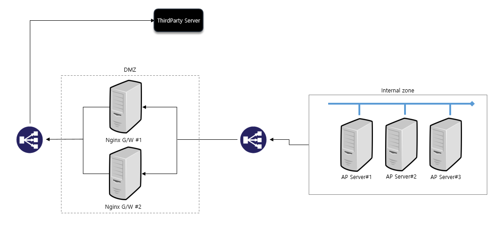

Feign LB using nginx (without Eureka)
시스템 구성도

subject: how to dynamically specify feign call service name according to the environment
구성 환경 설명
- 다중화 구성 AP서버에서 Nginx G/W를 통해 ThirdParty Server의 API를 호출하는 구성
- Nginx 앞에 L4 존재
- Nginx는 Failover 구성
요구사항
- Eureka에 등록되지 않은 서비스를 Ribbin통해 LB되게 해야한다.
개발 항목
- AS-IS
- direct로 외부 API를 feign#httpclient로 호출
- TO-BE
- Nginx G/W를 통해서 호출하도록 변경 필요
테스트 환경 구성
- Window에 두개 서비스 올려도 됨 (1.19.9 버전)
- Nginx 설정
- proxy_pass설정
server { listen 8050; server_name localhost; charset utf-8; location ~* ^/(chat|image|file) { resolver 8.8.8.8; proxy_pass https://test.com$uri; } # Health Check location /ping { access_log on; add_header 'Content-Type' 'application/json'; return 200 '{"status":"UP"}'; } }- 동일 서버에서 여러개 띄우려면, 포트만 다르게 해서 띄우도록 한다.
- server목록에 http url이나 서블릿path가 붙으면 안됨, 딱 c클래스까지
problem 1
https://niiiii.tistory.com/entry/Eureka-없이-ribbon으로-load-balancing-처리하기 에서처럼 yml설정만으로 했을때, npe발생
c.n.l.RoundRobinRule : 66 choose No up servers available from load balancer: DynamicServerListLoadBalancer:{NFLoadBalancer:name=kakao-service,current list of Servers=[],Load balancer stats=Zone stats: {},Server stats: []}ServerList:org.springframework.cloud.netflix.ribbon.eureka.DomainExtractingServerList@4be00017
07:44:29.490 -service-2 WARN c.n.l.BaseLoadBalancer :757 chooseServer LoadBalancer [kakao-service]: Error choosing server for key null
java.lang.NullPointerException: null
at com.google.common.base.Preconditions.checkNotNull(Preconditions.java:878)
at com.google.common.cache.LocalCache.get(LocalCache.java:3950)
at com.google.common.cache.LocalCache.getOrLoad(LocalCache.java:3974)
at com.google.common.cache.LocalCache$LocalLoadingCache.get(LocalCache.java:4935)
cause 1
기본 healthcheck uri는 / 루트로 되고 있는데,
nginx.conf에 / 루트로 선언된게 없다보니
ribbon으로 LB하려는 서버가 없어서 NPE가 발생한 것
solved 1
healthcheck url을 변경하고 싶다면,
별도의 configuration파일을 생성해서 bean으로 올리고 ribbonClients 설정으로 지정해주면 된다.
path를 yml로 빼서 주는 방법도 있겠다.
그게 아니라면 디폴트 / 루트로 check된다.
/ping을 healthcheck uri로 뺐다.
[yml]
thirdparty-gateway:
health-check-location: /ping
ribbon:
eureka:
enabled: false
NIWSServerListClassName: com.netflix.loadbalancer.ConfigurationBasedServerList
listOfServers: localhost:19011,localhost:19013
NFLoadBalancerRuleClassName: com.netflix.loadbalancer.AvailabilityFilteringRule
NFLoadBalancerPingClassName: com.ext.FeignRibbonPing
[java]
import com.netflix.loadbalancer.PingUrl;
public class FeignRibbonPing extends PingUrl {
@Value("${thirdparty-gateway.health-check-location:}")
private String healthCheckLocation;
@Override
public String getPingAppendString() {
return healthCheckLocation;
}
}
[nginx.conf]
location /ping {
access_log off; # on으로 하면 너무 많이 쌓인다.
add_header 'Content-Type' 'application/json';
return 200 '{"status":"UP"}';
}
** 참고로, nginx plus인 상용버전엔 별도로 health check용 location을 선언하지 않아도, health check 모듈?이 있는 것 같다.
Nginx, Nginx Plus 차이 - GRIP.News
- 테스트
- ping잘 올라온다.
- 번갈아가며 outgoing하고 있다.
- 가용성 검증
- 만약에 서버 정보가 잘못된 경우
- 400, 500에 대해서 LB가 되는지
- 한쪽서버가 가용하지 않은 경우 ping이 안된다는 에러가 주기적으로 찍힌다
java.net.ConnectException: Connection refused: connect
at java.net.TwoStacksPlainSocketImpl.socketConnect(Native Method)
at java.net.AbstractPlainSocketImpl.doConnect(AbstractPlainSocketImpl.java:350)
at java.net.AbstractPlainSocketImpl.connectToAddress(AbstractPlainSocketImpl.java:206)
at java.net.AbstractPlainSocketImpl.connect(AbstractPlainSocketImpl.java:188)
at java.net.PlainSocketImpl.connect(PlainSocketImpl.java:172)
at java.net.SocksSocketImpl.connect(SocksSocketImpl.java:392)
at java.net.Socket.connect(Socket.java:607)
at org.apache.http.conn.scheme.PlainSocketFactory.connectSocket(PlainSocketFactory.java:121)
at org.apache.http.impl.conn.DefaultClientConnectionOperator.openConnection(DefaultClientConnectionOperator.java:180)
at org.apache.http.impl.conn.ManagedClientConnectionImpl.open(ManagedClientConnectionImpl.java:326)
at org.apache.http.impl.client.DefaultRequestDirector.tryConnect(DefaultRequestDirector.java:605)
at org.apache.http.impl.client.DefaultRequestDirector.execute(DefaultRequestDirector.java:440)
at org.apache.http.impl.client.AbstractHttpClient.doExecute(AbstractHttpClient.java:835)
at org.apache.http.impl.client.CloseableHttpClient.execute(CloseableHttpClient.java:83)
at org.apache.http.impl.client.CloseableHttpClient.execute(CloseableHttpClient.java:108)
at org.apache.http.impl.client.CloseableHttpClient.execute(CloseableHttpClient.java:56)
at com.netflix.loadbalancer.PingUrl.isAlive(PingUrl.java:126)
at com.netflix.loadbalancer.BaseLoadBalancer$SerialPingStrategy.pingServers(BaseLoadBalancer.java:921)
at com.netflix.loadbalancer.BaseLoadBalancer$Pinger.runPinger(BaseLoadBalancer.java:691)
FeignClient - name or url
url을 쓰는 경우도 있고 name을 통해 nginx의 gateway를 통해서 호출하는 경우도 모두 지원해야한다고 하면
- 두개다 모두 정의할 경우에 대한 우선순위를 테스트를 통해서 정리해봤다.
- name은 필수값이 되어버렷다. 단, url은 null이어도 된다. (이전 feign은 필수가 아니였음)
- name, url 두개다 설정했을 때, url로 나간다.. 중복해서 name으로 나가진 않았다.
@FeignClient(
contextId = "com.TestClient",
name = "${test.subapi.name}",
url = "NO_URL",
configuration = {FeignConfiguration.class, FeignRetryConfiguration.class},
primary = false
)
public interface TestClient{
- 제품에는
- url을 쓰고자 하면 yml에 url을 정의하고, ribbon설정을 주석하도록 가이드했고, name을 쓰려고 하면 url을 공란으로 하는 것으로 했다.
- (다시 변경) feign call 하기 전에 nginx로 연결한 listOfServers의 서버의 상태가 Alive한지 체크하는 것을 추가해서 정상일 경우 name으로 호출하고 그게 아니면 url값을 참조해서 API호출하도록 했다.
import com.netflix.loadbalancer.Server; import lombok.RequiredArgsConstructor; import lombok.extern.slf4j.Slf4j; import org.springframework.cloud.client.ServiceInstance; import org.springframework.cloud.client.loadbalancer.LoadBalancerClient; import org.springframework.cloud.netflix.ribbon.RibbonLoadBalancerClient; import org.springframework.stereotype.Service; @Slf4j @Service @RequiredArgsConstructor public class FeignRibbonService { private final LoadBalancerClient loadBalancerClient; public boolean isAlive() { try { final ServiceInstance instance = loadBalancerClient.choose("thirdparty.thirdparty-gateway"); Server server; if (instance instanceof RibbonLoadBalancerClient.RibbonServer) { RibbonLoadBalancerClient.RibbonServer ribbonServer = (RibbonLoadBalancerClient.RibbonServer) instance; server = ribbonServer.getServer(); return server.isAlive(); } else { server = new Server(instance.getScheme(), instance.getHost(), instance.getPort()); return server.isAlive(); } } catch (Exception e) { log.error(e.getMessage()); return false; } } }
reference
Ribbon으로 Load Balancing처리(without Eureka)
LoadBalancer: Error choosing server for key null 에러 · Issue #11 · yanghun0070/dayco
Simple healthcheck endpoint in nginx server container
more detail..
좀더 디테일하게 하려면, config생성해서 주입
6. Client Side Load Balancer: Ribbon
꼭 주입안해도 클래스로 주입하는 방법
https://github.com/spring-cloud/spring-cloud-netflix/issues/92
설정디테일